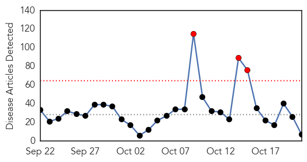
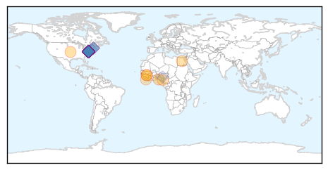

Influenza
30-Day Web Trend
6 alerts, 7 warnings

30-Day Twitter Trend
0 alerts, 0 warnings

Article Locations

Article Confidences
Top Articles:
- 0.995
- Today’s Email Announcements
- 0.990
- H7N9 Bird Flu Reaches Beijing
- 0.979
- Eisenhower Medical makes changes to protect patients, staff during flu season
- 0.960
- Flu clinics to begin soon
- 0.959
- Nurses Across the U.S. are Taking a Stand Against Forced Flu Vaccines
- 0.920
- Flu Shot Remains Most Dangerous Vaccine Based on Injuries and Deaths Compensated by Government
- 0.716
- Saskatchewan pauses mandatory flu shot policy for health-care workers
- 0.632
- Saskatchewan pauses mandatory flu shot policy for health-care workers
Top Tweets:
- 0.707
- An outbreak of influenza A(H1N1)pdm09 virus in a primary school in Vietnam https://t.co/Zw4CQFhele https://t.co/XzSTynQibZ
Ebola
30-Day Web Trend
3 alerts, 0 warnings

30-Day Twitter Trend
9 alerts, 0 warnings

Article Locations
Article Confidences
Top Articles:
- 0.999
- Italian Doctors Warn “Ebola Trojan Horse” Entering Europe via African Invaders
- 0.998
- Ebola: One Year After, FG Insists on Vigilance, Articles
- 0.997
- 1 Year After Ebola: FG Eulogises Dr Adadevoh, Global Partners, Others
- 0.993
- Chinese medical team stays in Liberia to fight Ebola
- 0.963
- Ebola Doctor Craig Spencer Thanks Caretakers At Bellevue Hospital « CBS New York
- 0.901
- Nigeria celebrates first anniversary of Ebola-free declaration
- 0.827
- NGCL Honors Juli Endee for Promoting Peace, Health and Culture
Top Tweets:
- 1.000
- UK Ebola nurse has meningitis caused by persisting virus: doctors - https://t.co/HcLMAEDPMp ebola
- 1.000
- UK Ebola nurse has meningitis caused by persisting Ebola -doctors - https://t.co/YZyFS3IApW ebola
- 1.000
- UK Ebola nurse has meningitis caused by persisting Ebola -doctors - https://t.co/PmG4ZOzvwZ ebola
- 0.999
- UK Ebola nurse has meningitis caused by persisting Ebola, doctors say - https://t.co/psLkzCwkzs ebola
- 0.998
- UK Nurse with Serious Ebola Complications Has Meningitis Caused By Persisting Virus - https://t.co/z2gAgVihh0 ebola
- 0.998
- UK Ebola nurse has meningitis - https://t.co/iCd4TJbToi ebola
- 0.997
- Health: Sierra Leone Addresses New Ebola Cases - https://t.co/cIaWAu7kKP ebola
- 0.995
- Ebola - https://t.co/VXl2LbE8Ga ebola
- 0.995
- British Nurse Better After Ebola Complications Cause Meningitis - https://t.co/2rT4gIBjrE ebola
- 0.994
- Sick British Ebola nurse 'much better': hospital - https://t.co/o1gloBcpUd ebola
- 0.993
- Mystery deaths in Sierra Leone spread fear of Ebola relapses - https://t.co/dBVqDbb7sr ebola
- 0.993
- Mystery deaths in Sierra Leone spread fear of Ebola relapses - https://t.co/Ts0XOhBzKR ebola
- 0.993
- Mystery deaths in Sierra Leone spread fear of Ebola relapses - https://t.co/35HZpX1Thd ebola
- 0.993
- Mystery deaths in Sierra Leone spread fear of Ebola relapses - Reuters https://t.co/ifr5Buyk8m ebola EVD
- 0.992
- UK Ebola nurse Cafferkey suffering from meningitis, not relapse - https://t.co/zRMoUCfTxW ebola
- 0.991
- UK Ebola nurse Cafferkey suffering from meningitis, not relapse - CNN https://t.co/OzChZtw7el ebola EVD
- 0.989
- Sick British Ebola nurse 'much better' - https://t.co/d0XN0K3SAx ebola
- 0.988
- Ebola nurse Pauline Cafferkey has meningitis caused by virus - https://t.co/v7Wfagft12 ebola
- 0.987
- Gilead Developing Ebola Drug - https://t.co/Lon5ZwUGhc ebola
- 0.987
- Gilead Developing Ebola Drug - Nasdaq https://t.co/2eqyd4F02K ebola EVD
- 0.985
- Doctors: Scots Ebola nurse Pauline Cafferkey has meningitis - https://t.co/aFa18XsDxK ebola
- 0.985
- Cambuslang Ebola nurse Pauline continues to fight off the deadly virus - https://t.co/wK1It1rUcC ebola
- 0.984
- Erratum: Genetic diversity and evolutionary dynamics of Ebola virus in Sierra Leone - https://t.co/uA3uPt1FQH ebola
- 0.980
- Scottish Ebola nurse now on the mend after battling meningitis - https://t.co/nibNb8Un03 ebola
- 0.979
- Can Ebola Survive in a Man's Semen? - https://t.co/v9gffqavVL ebola
- 0.976
- Ebola caused meningitis in nurse Pauline Cafferkey - https://t.co/Ci8OpoYKFt ebola
- 0.976
- Doctor reunites with hospital staff that treated him for Ebola - https://t.co/b1WLce9iT3 ebola
- 0.968
- UK doctors say nurse suffering Ebola relapse has improved - https://t.co/t3vrsgPW06 ebola
- 0.968
- UK doctors say nurse suffering Ebola relapse has improved - https://t.co/0Iq336dTE2 ebola
- 0.968
- Nurse With Ebola Improves Significantly - https://t.co/nR6QSUa532 ebola
- 0.966
- UIC helps protect health care workers from Ebola, new diseases - https://t.co/bvhQ2zZ0T1 ebola
- 0.966
- Nurse Pauline Cafferkey suffering from meningitis caused by Ebola - https://t.co/vGvh30m82W ebola
- 0.965
- Mysterious deaths raise fears of Ebola relapse - Reuters https://t.co/LE3wL0fLia ebola EVD
- 0.965
- Ebola: Meningitis risk must be on radar - https://t.co/Ere5xbhwhp ebola
- 0.961
- Pauline Cafferkey has meningitis caused by Ebola - https://t.co/EKS4GpL83l ebola
- 0.960
- Marking Global Handwashing Day in Ebola-Impacted Sierra Leone - https://t.co/0WABwDNe5Q ebola
- 0.960
- Ebola-Hit Nurse Makes Significant Improvement - https://t.co/dbXotgknU0 ebola
- 0.959
- Gilead Confirms It Is Developing Ebola Drug - https://t.co/UcXycrHAMN ebola
- 0.956
- Ebola nurse Pauline Cafferkey makes "significant improvement" against virus - https://t.co/d5BBUhj0JK ebola
- 0.948
- Texas Health Resources appeals judge's order in Ebola nurse Nina Pham's lawsuit - Dallas Morning N... https://t.co/pU4acEIBoX ebola EVD
- 0.948
- 1 Year After Ebola: FG Eulogises Dr Adadevoh, Global Partners, Others - https://t.co/4AX47KEtSI ebola
- 0.941
- UK hospital caring for Ebola nurse to give details of her case - https://t.co/Np1NCZm6xF ebola
- 0.941
- UK hospital caring for Ebola nurse to give details of her case - https://t.co/1RDILAHBWG ebola
- 0.929
- Ebola nurse Pauline Cafferkey nearly died from meningitis, doctors say - The Guardian https://t.co/2tguM58nSB ebola EVD
- 0.928
- Nigeria to set up clinic for Ebola survivor - https://t.co/TQMtn4wlr5 ebola
- 0.927
- Ebola nurse Pauline Cafferkey: Hospital news briefing - https://t.co/qZQGfrccw5 ebola
- 0.912
- Ebola doctor visits NY hospital staff who cared for him - https://t.co/yTssWdJPUv ebola
- 0.912
- Ebola doctor visits NY hospital staff who cared for him - https://t.co/KiaenIkTCI ebola
- 0.894
- Ebola nurse Pauline Cafferkey diagnosed with meningitis as a result of new infection - but her ... - https://t.co/H09tHxZxj9 ebola
- 0.883
- Improvement for Ebola-stricken nurse Pauline Cafferkey in 'unprecedented' case - https://t.co/q8rHhjPnH6 ebola
Showing top 50 tweets...